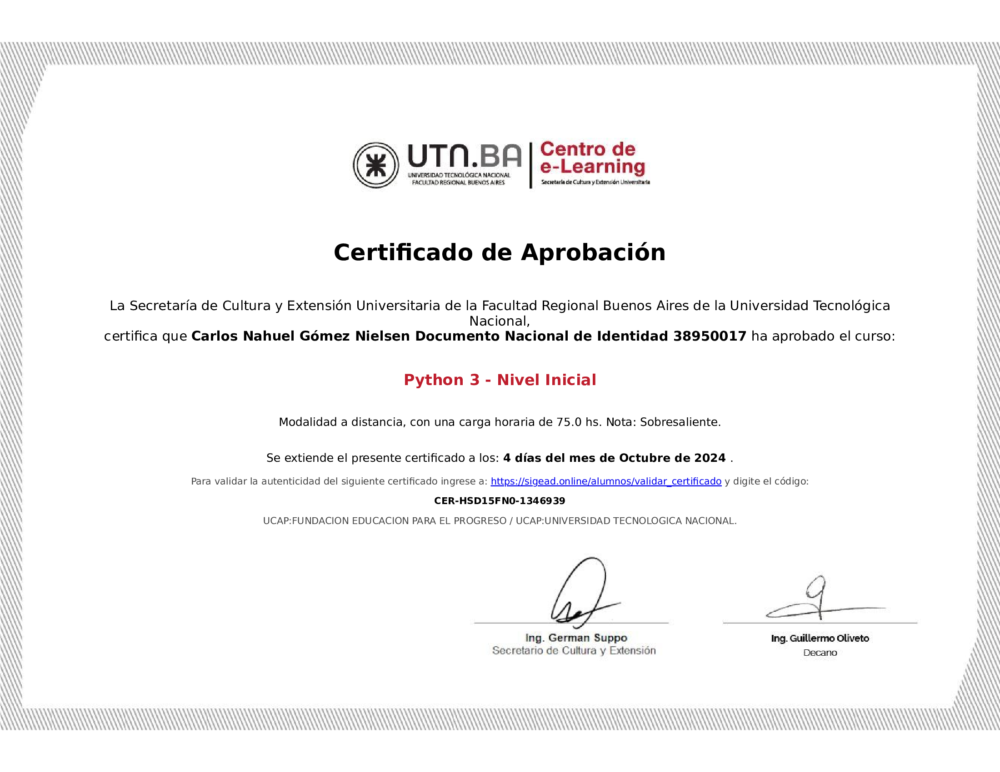
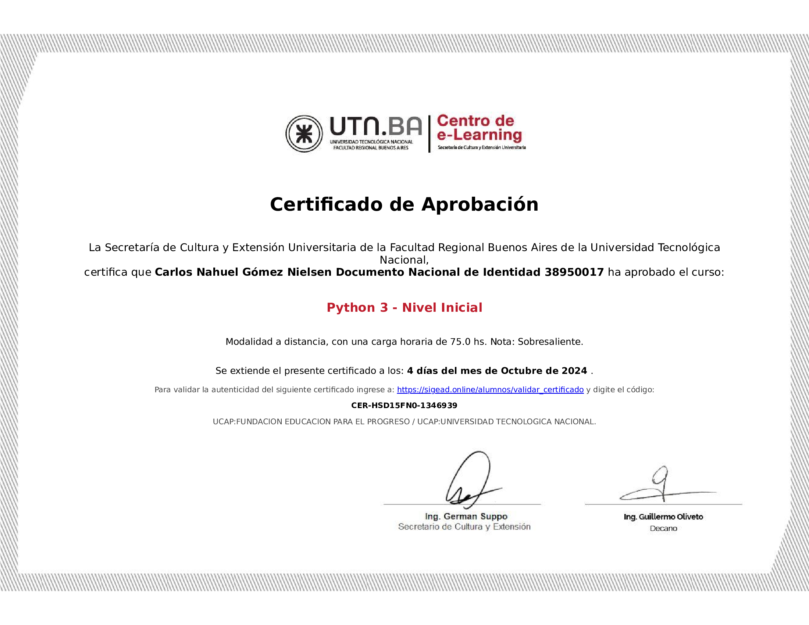

Carlos Nahuel
Gómez Nielsen
Desarrollador Python
Desarrollador web

Clearing bancario con más de 6 años de experiencia en el área. He utilizado herramientas como Excel y Word. También, soy operador en el uso de clasificadora de cheques Unisys NDP300 DP500, en el escáner de cheques de escritorio SmartSource Professional.
Además, he utilizado programas como Outlook, Team, Supervisor de Aperta, Burroughs CAPI Exerciser y BCS. Tengo realizados cursos en el lenguaje de programación Python y en la herramienta del paquete Office Excel. Actualmente, me encuentro en búsqueda laboral tanto para el ámbito de administrativo de clearing bancario, al igual que busco mi primera experiencia laboral en el ámbito de la programación.
Actualmente, me encuentro en búsqueda laboral tanto para el ámbito de administrativo de clearing bancario, al igual que busco mi primera experiencia laboral en el ámbito de la programación.
 
